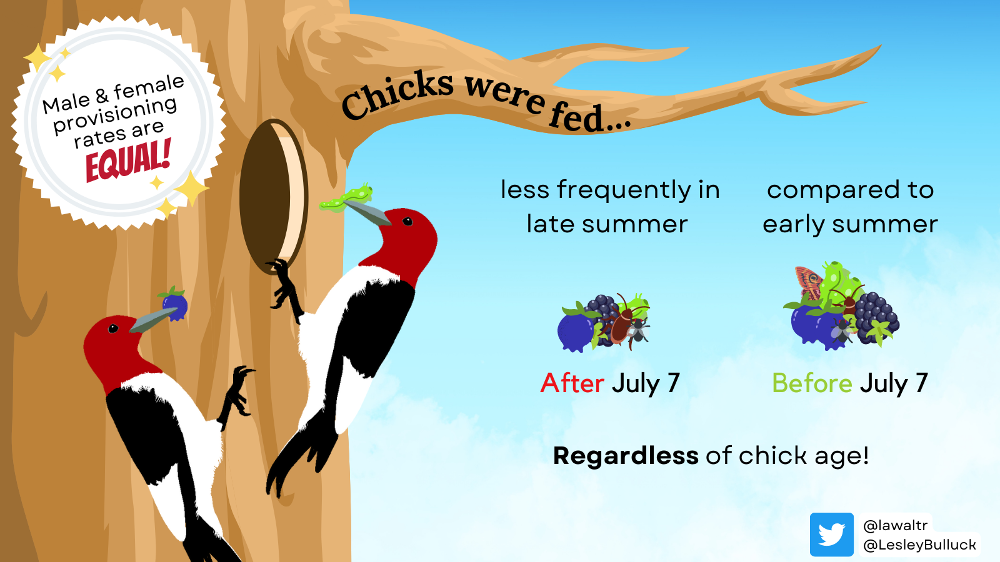
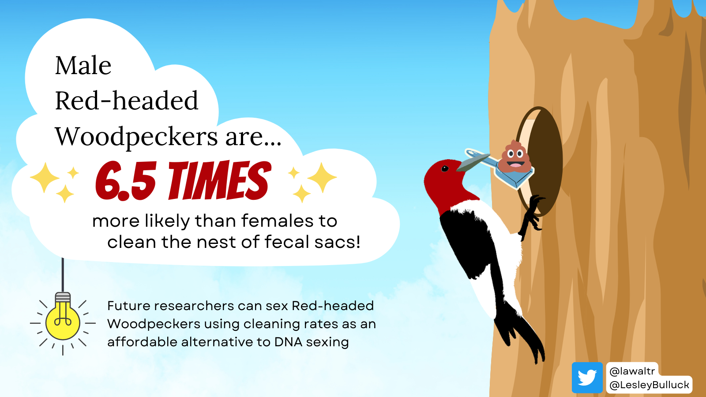
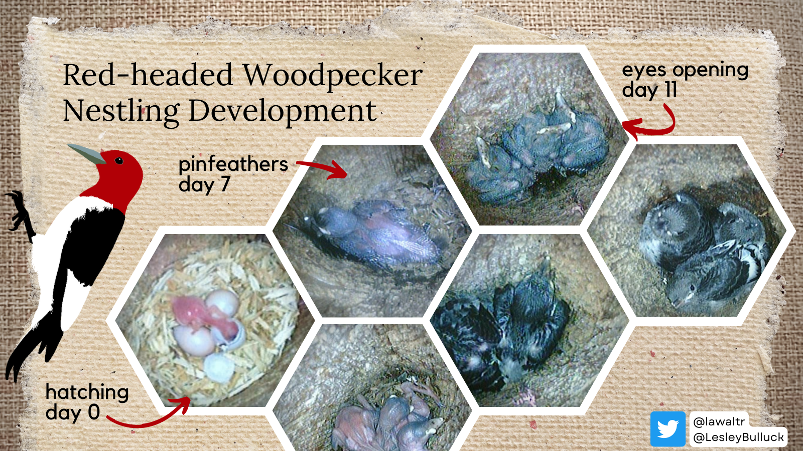

Red-headed Woodpecker Research
I studied parental care behavior, home range size, and feather reflectance of Red-headed Woodpeckers (Melanerpes erythrocephalus) as part of my Master’s work with the Bulluck Avian Ecology Lab.
Parental care behavior
What do Red-headed Woodpecker moms and dads have in common? Withput plumage or significant size differences, they look virtually identical. And they’re both great parents! Below is a summary of my research using a series of infographics. To learn more, check out my parental care publication or the parental care data repository.
![Red-headed Woodpecker parental care results summary. Ninety-nine percent of all woodpecker species are sexually dimorphic; less than one percent are truly monomorphic. Red-headed and Lewis's Woodpeckers are the only monomorphic woodpeckers. Since males and females are hard to tell apart in monomorphic species, parental care behaviors are often under-studied. We used DNA to sex color-banded Red-headed Woodpeckers and video-recorded their parental care. Males did nearly all of the nest cleaning. Provisioning, also known as feeding chicks, was equal. Incubation and diurnal brooding was done by females more.](images/rhwo_parental_care.png)


Nestling development
My paper’s appendix contains details regarding Red-headed Woodpecker nestling development. Benchmarks in growth can be used in future research to determine chick ages in nests with unknown hatch dates.

Chick fledge events
Red-headed Woodpecker parents work tirelessly for the day their chicks leave the nest. In all of the hours recording videos at active nest cavities we managed to capture footage of a chick fledging on two occasions. Though not of cinematic quality, this footage captures a life history event that was not previously documented. Both fledging videos are archived at the Macaulay Library (ML488612, ML488613).
Home range size
This work is yet to be published but is well documented in my Master’s thesis. We estimated home range sizes of 25 breeding adult Red-headed Woodpeckers using PinPoint GPS tags and 95% kernel density estimates. Based on this preliminary analysis, we determined Red-headed Woodpecker males have larger home ranges than females, though this difference is not significant.
Crown feather reflectance
We collected crown feathers from 68 banded Red-headed Woodpeckers. From the feather samples, we measured carotenoid content and overall brightness. These data are still being analyzed; we plan to assess whether individual parental care effort is related to feather ornamentation, and/or if males and females can be distinguished using feather reflectance.